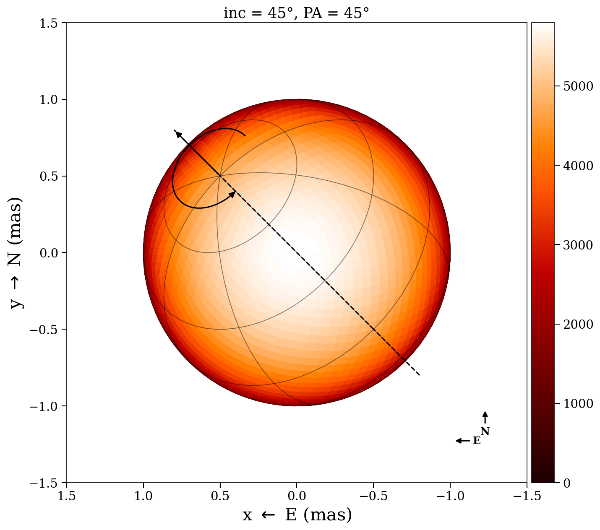

Conventions
This page documents the coordinate systems, angle definitions, and sign conventions used throughout ROTIR. All conventions are consistent across the geometry, orbital, radial-velocity, and plotting code.
Sky plane
ROTIR adopts the standard astronomical sky-plane convention:
| Axis | Direction | Internal name |
|---|---|---|
| x | East (left on plots) | -proj_west |
| y | North (up on plots) | proj_north |
| z | Toward the observer | positive normal_z = visible |
Internally, projected vertex coordinates are stored as proj_west and proj_north (both in mas). Plots negate the West component so that East points left, matching the standard on-sky orientation for optical interferometry.
Stellar surface coordinates
The unit sphere is parameterized in geometric spherical coordinates:
| Coordinate | Symbol | Range | Definition |
|---|---|---|---|
| Colatitude | θ | 0 to π | Measured southward from the North pole |
| Longitude | φ | 0 to 2π | Increasing eastward |
Conversion to Cartesian: x = sin(θ)cos(φ), y = sin(θ)sin(φ), z = cos(θ).
Spin-axis angles
Inclination
Angle between the stellar spin axis and the line of sight (z-axis toward observer).
| Value | Meaning |
|---|---|
| 0° | Pole-on (face-on to observer) |
| 90° | Equator-on (edge-on) |
Position angle (PA)
Angle of the projected spin axis on the sky, measured from North through East (counterclockwise on plots where East is left).
| Value | Projected pole points ... |
|---|---|
| 0° | North |
| 90° | East |
The projected spin-axis direction on the sky is:
spin_x = -sin(inc) sin(PA) (West component)
spin_y = sin(inc) cos(PA) (North component)
spin_z = cos(inc) (toward observer)Rotation matrix
ROTIR uses a ZXZ Euler convention. The three angles are applied as a right-multiply on vertex coordinates:
xyz_rotated = xyz · R(ψ, inc, PA)where R = Rz(-ψ) · Rx(inc) · Rz(-PA) and the angles are:
| Angle | Symbol | Meaning |
|---|---|---|
| ψ | 2π t / rotation_period | Rotation phase |
| inc | inclination (radians) | Tilt from line of sight |
| PA | position_angle (radians) | On-sky orientation |
Rotation sense: prograde (counterclockwise on sky plots when viewed from the visible pole). A surface feature moves West → North → East on the sky as time increases.
Rotation sense consistency
Stellar spin and orbital motion use the same sense: both are counterclockwise on the sky when their angular momentum vector points toward the observer.
| Motion | Face-on (inc or i = 0°) | On sky (East left, North up) |
|---|---|---|
| Stellar spin | Feature: West → North → East | Counterclockwise |
| Orbital (increasing ν) | Secondary: North → East → South | Counterclockwise |
This was verified numerically: a spin feature at (West=1, North=0) at t=0 moves to (West=0, North=1) at t=P/4; an orbiting secondary at (North=1, East=0) at ν=0 moves to (North=0, East=1) at ν=π/2. Both trace counterclockwise arcs on the standard sky plot.
Visibility
A surface element is visible when its outward normal has a positive z-component (pointing toward the observer). ROTIR uses a soft visibility model:
weight = sigmoid(κ · normal_z)with κ controlling the sharpness of the limb transition (default 50). Pixels with weight < 0.01 are treated as invisible.
Binary orbital elements
Orbital elements follow standard astrometric/spectroscopic conventions:
| Parameter | Symbol | Unit | Definition |
|---|---|---|---|
| Orbital inclination | i | degrees | Angle between orbital angular momentum and line of sight (0° = face-on, 90° = edge-on) |
| Longitude of ascending node | Ω | degrees | Position angle of the ascending node, measured N through E |
| Argument of periapsis | ω | degrees | Angle from ascending node to periapsis, measured in the orbital plane |
| Period | P | days | Orbital period |
| Semi-major axis | a | mas | Angular semi-major axis |
| Eccentricity | e | — | Orbital eccentricity |
| Time of periapsis | T0 | JD | Reference epoch for periapsis passage |
| Mass ratio | q | — | M₂ / M₁ |
| Period derivative | dP | days/day | Linear period change |
| Apsidal motion | dω | degrees/day | Periapsis precession rate |
The Thiele-Innes coefficients (Laplace coefficients in the code) are computed from (Ω, i, ω) in compute_coeff() and used to project the orbit into the observer frame.
Orbital output frame
binary_orbit_rel and binary_orbit_abs return positions in the observer frame:
| Component | Direction |
|---|---|
| x | North (Dec increasing) |
| y | East (RA increasing) |
| z | Away from observer (positive = receding) |
Note that the orbital z-axis points away from the observer (positive = receding), while the stellar geometry z-axis points toward the observer. The orbit_to_rotir_offset function handles this conversion when placing binary components on the sky plane.
Radial velocities
binary_RV returns radial velocities in km/s following the spectroscopic convention:
| Sign | Meaning |
|---|---|
| Positive | Receding (redshift) |
| Negative | Approaching (blueshift) |
Vrad = γ + K [cos(ν + ω) + e cos(ω)]where ν is the true anomaly and ω the argument of periapsis (with a π offset between primary and secondary).
Annotated example
The following figure shows a sphere at inclination 45°, position angle 45°, with the spin axis, rotation arrow, graticules, and E/N compass all displayed:
